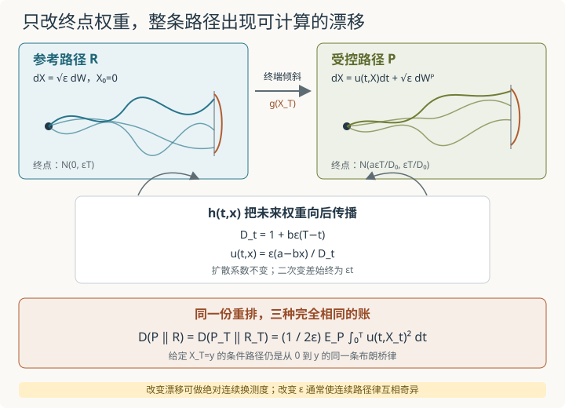

本页目录
基础衔接 17 · 连续时间路径熵与控制：给布朗路径的终点加权
先修：有限状态 Markov 路径、Schrödinger 桥入口。本讲固定同一个初点与同一个扩散系数，用一个可积的终端权重倾斜布朗路径。我们会完整算出 \(h\) 函数、Doob 漂移、终端高斯、路径相对熵与控制能量；这不是任意双端边缘的 Schrödinger 桥求解器。
只在终点重新加权，整条随机路径为什么会出现漂移？
1. 参考路径与终端倾斜
在时间区间 \([0,T]\) 上，令参考测度 \(R\) 下的坐标过程满足
所以 \(X_T\sim N(0,\varepsilon T)\)。选择严格为正的终端权重
定义
以及新的路径测度
这不是一句形式记号。因为 \(b\ge0\)，高斯尾部足以保证 \(0<h(0,0)<\infty\)；分母正是 \(E_R[g(X_T)]\)，所以右边非负且期望为 1，确实定义概率测度。\(P\) 与 \(R\) 的初始分布都是同一个 \(\delta_0\)，这里没有额外的初始 KL 项。
可以把操作想成给每条路径一张只由终点决定的“权重票”：走到较受 \(g\) 偏爱的终点，整条路径在新总体里出现得更频繁。接下来要证明，这种全路径重排等价于在每个时刻加入一个状态依赖漂移。
2. 高斯配方：把未来权重压回当前时刻
在 \(t<T\) 时给定 \(X_t=x\)，剩余增量是方差
的高斯变量。写终点为 \(y\)，则
令
把指数对 \(y\) 配方：
第一项积分后给出 \(D_t^{-1/2}\)，因此
两个端点检查能及时发现符号错误。\(t=T\) 时 \(D_T=1\)，上式回到 \(h(T,x)=g(x)\)；而
由条件期望的塔式性质，
是正的、一致可积的 \(R\)-鞅，且 \(M_T=dP/dR\)。这里“真鞅”不是从一个未经检查的局部鞅猜出来的，而是由可积终端密度的条件期望直接保证。
3. Doob 变换：漂移是未来对数权重的梯度
\(h\) 满足向后热方程
对光滑测试函数 \(f\)，把参考生成元作用在乘积 \(hf\) 上并除以 \(h\)。用上面的热方程消去只作用于 \(h\) 的项，得到时间非齐次 Doob 生成元
由显式 \(h\)，
所以 \(P\) 下的过程满足
\(a\) 把路径整体拉向一个方向；\(b\) 提供指向 \(a/b\) 的线性回复，但分母随剩余时间改变强度。\(b=0\) 时只剩常漂移 \(u=\varepsilon a\)。这里改变的是漂移，二次变差仍为 \([X]_t=\varepsilon t\)。
严格地说，Girsanov 换测度需要密度过程是真鞅，并要有足够可积性来讨论熵与能量。Novikov 条件是一种常用的充分条件，却不是定义换测度的必要条件。本模型中，\(M_t\) 已由可积的正终端密度直接构造为一致可积鞅；显式线性漂移和高斯边缘还保证下文的平方能量有限。因此无需把“形式随机指数”当作已经完成的证明。
4. 终点变成哪个高斯？
参考终点密度乘上 \(g\)：
再次配方，得到
增大 \(a\) 改变均值方向；增大 \(b\) 压缩终端方差，同时也抑制均值大小。不要把 \(g\) 本身误叫作终端概率密度：它是相对于参考终端律的未归一化权重，真正密度还包含参考高斯与归一化常数。
任意中间时刻也能直接读出。因为下节将证明给定终点后的桥没有改变，
这些边缘公式也可由线性 SDE 的矩方程得到，是一条独立核对路径。
5. 为什么条件桥完全没变？
密度 \(dP/dR\) 只依赖 \(X_T\)。对任意有界路径泛函 \(F\)，用正则条件分布写
因此对 \(P_T\)-几乎处处的终点 \(y\)，
右边是从 0 到 \(y\) 的布朗桥：
所以 \(P\) 不是修改每个终点对应的桥形状，而是重新分配不同终点桥的混合权重。条件在连续变量的单点事件上概率为零；上式应理解为正则条件概率的版本，而不是用初等比值除以 \(P(X_T=y)=0\)。
6. 路径 KL、终端 KL 与控制能量为何相等？
因为两测度给定 \(X_T\) 后的条件路径律相同，相对熵链式分解中的条件项为零：
对两个一维高斯 \(P_T=N(\mu_T,\sigma_T^2)\) 与 \(R_T=N(0,\varepsilon T)\)，代入高斯 KL 得
另一边从 Girsanov 密度计算。令 \(\theta_t=u(t,X_t)/\sqrt\varepsilon\)。在 \(P\) 下写 \(dW_t=dW_t^P+\theta_tdt\)，则
本模型平方可积，随机积分期望为零，故
这份能量还可以不用随机模拟，直接由中间高斯边缘积分。由上一节的均值与方差，
代入 \(u=\varepsilon(a-bX_t)/D_t\)，在 \(b>0\) 时利用
得到
与终端 KL 逐项相同。\(b=0\) 的结果由直接计算或连续极限得到，不需要在含 \(b^{-1}\) 的中间式里硬代零。

7. 实验怎样读：四个参数，各自改变哪一层？
实验控制 \(a\in[-2,2]\)、\(b\in[0,3]\)、\(\varepsilon\in[0.5,2]\)、\(T\in[0.5,2]\)。默认均为 1。它展示解析终端均值与方差、若干时刻的漂移场，并用两条独立公式计算终端 KL 与积分能量。
按下面顺序操作：
- 默认输入先核对 \(D_0=2\)、\(\mu_T=1/2\)、\(\sigma_T^2=1/2\)，两份代价都为约 \(0.2215735903\)。
- 把 \(a\) 从 1 改成 \(-1\)。均值和漂移场左右翻转，方差与 KL 不变，因为代价只含 \(a^2\)。
- 令 \(a=0\)，再增大 \(b\)。终端均值保持零，方差缩小；控制仍要付出把终点分布压窄的代价。
- 令 \(b=0\)、\(a=1\)。漂移应在全部时空恒为 \(\varepsilon\)；默认 \(\varepsilon=T=1\) 时终端为 \(N(1,1)\)，KL 与积分能量都为 \(1/2\)。
\(\varepsilon\) 滑块每次定义一个新的“参考与控制成对问题”。它可以检验本页解析式怎样依赖噪声强度，但不能把两个不同 \(\varepsilon\) 的连续路径律直接送进 Girsanov KL 比较；这个陷阱在第二道迁移题处理。
无脚本后备：
| 输入 \((a,b,\varepsilon,T)\) | 终端均值 | 终端方差 | \(D(P\|R)\) | 漂移特征 |
|---|---|---|---|---|
| \((1,1,1,1)\) | \(0.5\) | \(0.5\) | \(0.2215735903\) | \(u(t,x)=(1-x)/(2-t)\) |
| \((-1,1,1,1)\) | \(-0.5\) | \(0.5\) | \(0.2215735903\) | 默认场关于原点反向 |
| \((0,1,1,1)\) | \(0\) | \(0.5\) | \(0.0965735903\) | 只做向零回复与压缩 |
| \((1,0,1,1)\) | \(1\) | \(1\) | \(0.5\) | \(u(t,x)=1\) |
表中的 KL 与积分能量必须分别算出后相符；只把同一个数字复制到两行，不算独立核验。漂移图是解析场的切片，不是有限样本对期望的证明。
8. 两道迁移题
题一。 令 \(b=0\)，保留任意 \(a\in\mathbb R\)、\(\varepsilon,T>0\)。从 \(h\) 开始推导漂移、终端律和两种熵代价，不直接引用默认数值。
查看答案：指数线性权重对应常漂移
此时 \(D_t=1\)，所以
于是
它与参考终点高斯方差相同，故
控制能量也直接给出
给定终点后的条件路径仍是扩散系数 \(\varepsilon\) 的布朗桥；常漂移改变终点混合，不改变这些桥。
题二。 比较两个无漂移参考过程 \(R_\varepsilon\) 与 \(R_{\widetilde\varepsilon}\)，其中 \(\varepsilon\ne\widetilde\varepsilon\)。为什么它们的终端高斯 KL 有限，却不能把连续路径 KL 当作同一个有限数？用 \(n\) 个等距增量的离散化说明极限发生什么。
查看答案：扩散强度写在路径的二次变差里
\(R_\varepsilon\)-几乎每条路径满足
而 \(R_{\widetilde\varepsilon}\)-几乎每条路径满足 \([X]_t=\widetilde\varepsilon t\)。两类路径由可测的二次变差事件区分，因而当两扩散系数不同时，两条连续路径律互相奇异，路径 KL 为无穷。Girsanov 定理可改变漂移，不能改变这个二次变差。
若只观察 \(n\) 个等距增量，每个增量分别服从 \(N(0,\varepsilon T/n)\) 与 \(N(0,\widetilde\varepsilon T/n)\)。令 \(r=\varepsilon/\widetilde\varepsilon\)，独立增量的 KL 相加为
\(r\ne1\) 时括号严格为正，所以网格加密后线性发散。终端只保留增量总和，丢掉了能辨认二次变差的大量路径信息；它的有限 KL 不能代替连续路径 KL。
9. 这是不是已经解了任意 Schrödinger 桥？
不是。本讲给定一个终端势 \(g\)，它自动决定终端分布
若题目反过来指定任意终端边缘，必须先检查它对 \(R_T\) 的绝对连续性并求出相应密度；若初、终两端边缘都需要同时调整，通常还要解一对 Schrödinger 势的耦合问题。本讲初点固定为双方共同的 \(\delta_0\)，只做单侧终端倾斜。
同样，本页的高斯闭式依赖线性 Brownian 参考与二次终端势。一般扩散、路径依赖势、状态约束或不可积权重，需要重新检查 \(h\) 的存在、正则性、密度鞅与能量有限性。公式的形状可以提示方向，不能替代这些条件。
速查与资料
终端正权重 \(g(X_T)\) → 条件期望 \(h(t,x)\) → 正密度鞅 \(h(t,X_t)/h(0,0)\) → Doob 漂移 \(u=\varepsilon\partial_x\log h\) → 条件桥不变 → 路径 KL 等于终端 KL与平方漂移能量。下一步可回到Schrödinger 桥，区分“给定势产生端点”与“给定端点反求势”。
路径相对熵、条件桥分解与 Schrödinger 问题的系统背景见 Léonard 的综述；有限熵扩散的漂移观点可追溯到 Föllmer 的论文目录与原始文献；Doob 变换的时空调和函数与条件过程公式可对照 Bonn 随机分析讲义。本讲闭式已由高斯积分、生成元与矩方程三条路径交叉核对。资料核查：2026-09-08。